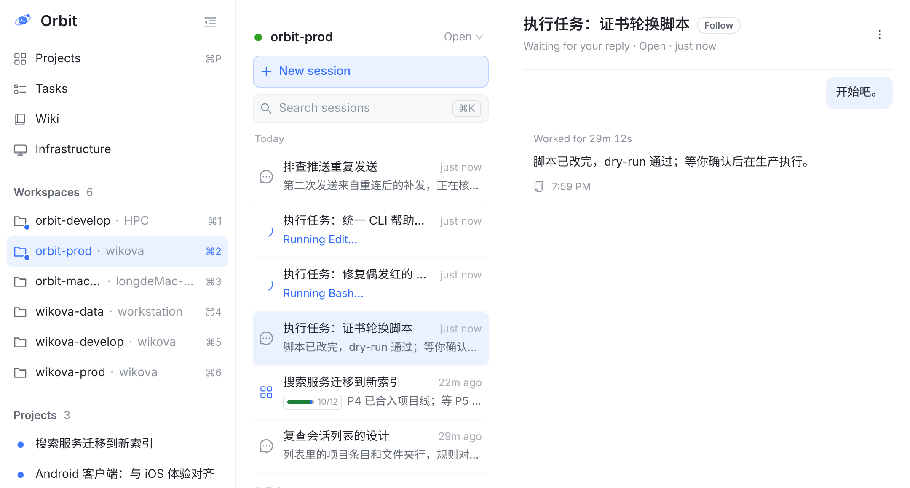
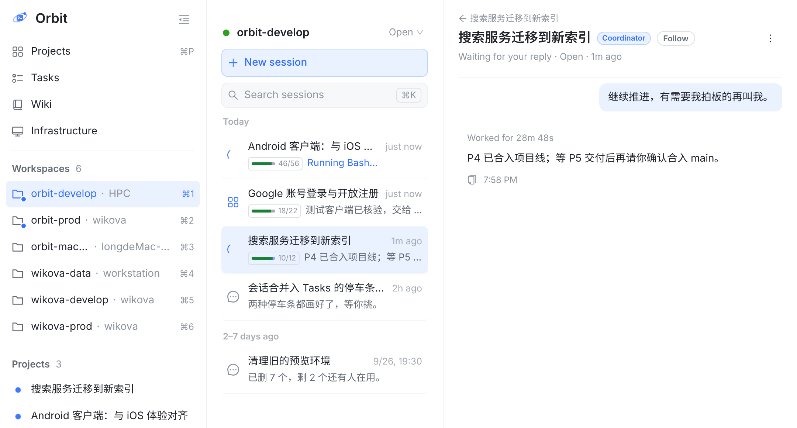
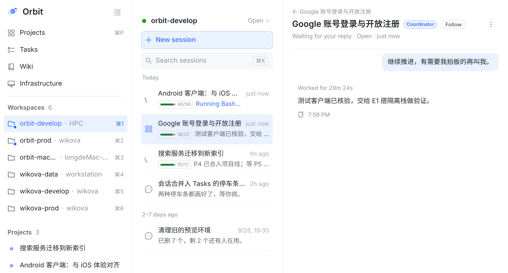
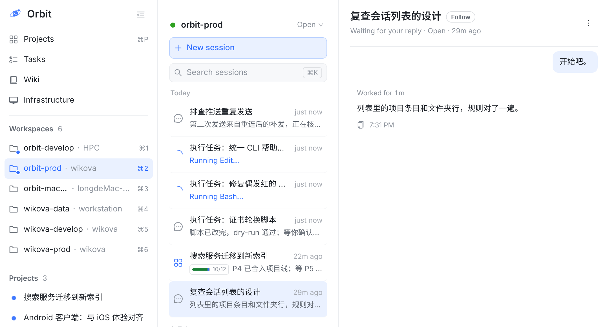
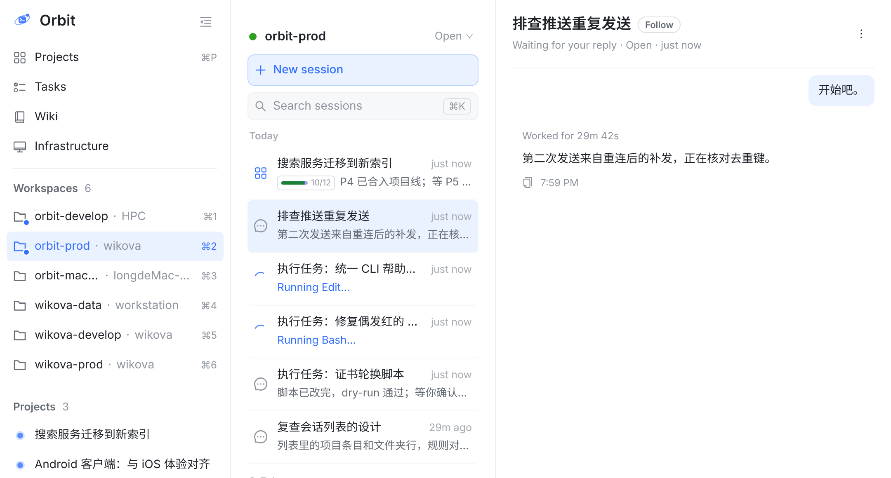
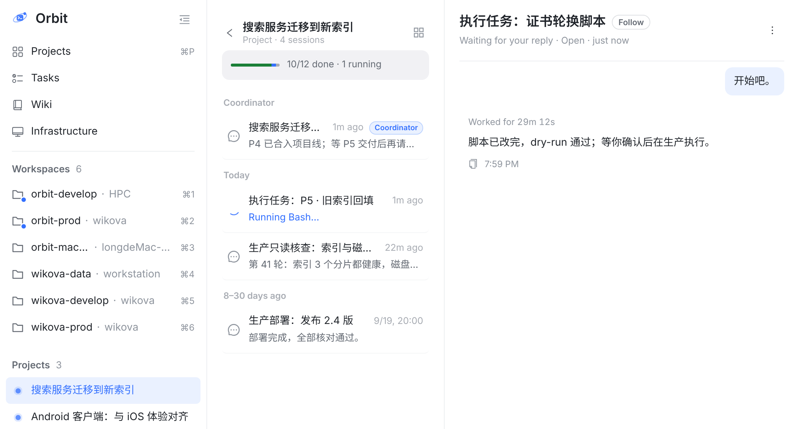
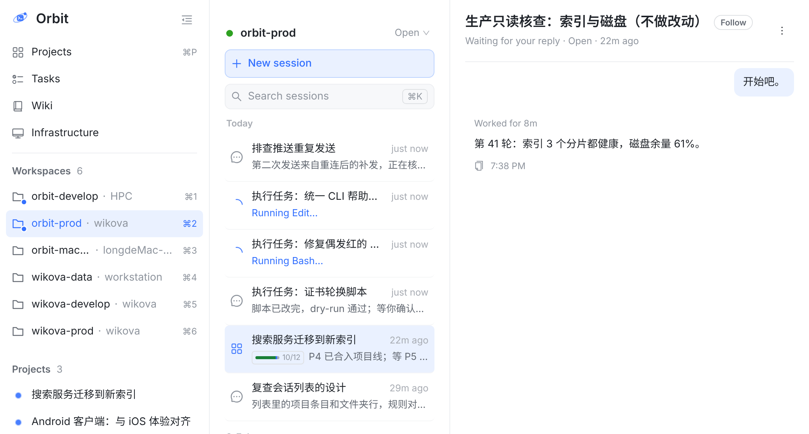

一个项目在每个有它的会话的 Workspace 里都有一行。这一行在 coordinator 所在的 Workspace 里代表 coordinator；在别的 Workspace 里，它收的只是那个 Workspace 自己的会话。今天方向键和「从侧栏进来时默认打开哪条」仍把它当 coordinator，于是在 orbit-prod 里会被带去 orbit-develop。每张图都是真实 Web 控制台的截图（vite 加假数据：今天 = main 0868a3f21，建议 = 同一棵树打上 prototype.patch）；会话名和项目名是示例，红色虚线和数字是标注。



方向键跨过它，默认也不打开它；点击照旧进项目会话页。在 coordinator 所在的 Workspace 里一切照旧。下面四张图是打了补丁的真实页面。



| coordinator 所在的 Workspace（orbit-develop） | 别的 Workspace（orbit-prod） | |
|---|---|---|
| 这一行代表 | coordinator | 这个 Workspace 自己的成员会话，像文件夹行 |
| 点击 | 进项目会话页（不变） | 进项目会话页（不变） |
| ↑ / ↓ | 打开 coordinator（不变） | 跨过（改） |
| 从侧栏进来时默认打开 | 可以是 coordinator（不变） | 不打开这一行（改） |
| 状态点、时间 | 只算这个 Workspace 的会话（不变） | 只算这个 Workspace 的会话（不变） |
| 第 2 行、进度小标签 | 整个项目（不变） | 整个项目（不变） |

和文件夹行一个规矩，列表永远是你看着的这个 Workspace 的。
改动最小：两处映射，+14 −4。
用键盘到不了这一行，要点它。
键盘能到这一行，列表也不动；① 这一行跟着高亮。
② 右栏打开的是「生产只读核查」，和这一行的标题对不上；成员不止一个时，只到得了最新那个。
要让会话地址记住列表来自哪个 Workspace（多一个参数）；左边 orbit-prod 的列表，右边 orbit-develop 的对话。
这一行还是被当成 coordinator，和点击（进项目会话页）不是一回事。
WorkspaceView.tsx 里方向键用的 orderedSessions 和默认打开用的 listedSessions，都把项目这一行换成它的 coordinator；改成只在 coordinator 所在的 Workspace 里这样换（下面的 prototype.patch，tsc 通过，② 的图就是它）。补三条测试：orbit-prod 里 ↓ 跨过这一行；从侧栏进 orbit-prod 不被带走；orbit-develop 里 ↓ 照旧打开 coordinator。docs/session-list-projects-design.md §4.3 还写着「点条目进第 2 行说的会话」，§4.4 还写着「点了……会话栏跟着换到它的 Workspace」；改成 10-05 起的做法（点击进项目会话页）和上面的规则。截图：真实 Web 控制台，vite 加假数据，窗口 1080×700，截上面 580 高。今天 = main 0868a3f21；建议 = 同一棵树打上 prototype.patch；方案 B 是另一版补丁，只为截这一张图。会话名和项目名是示例。